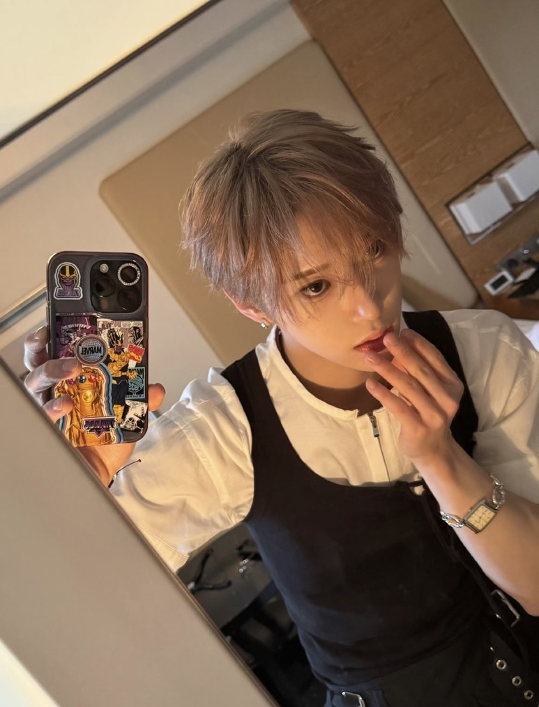
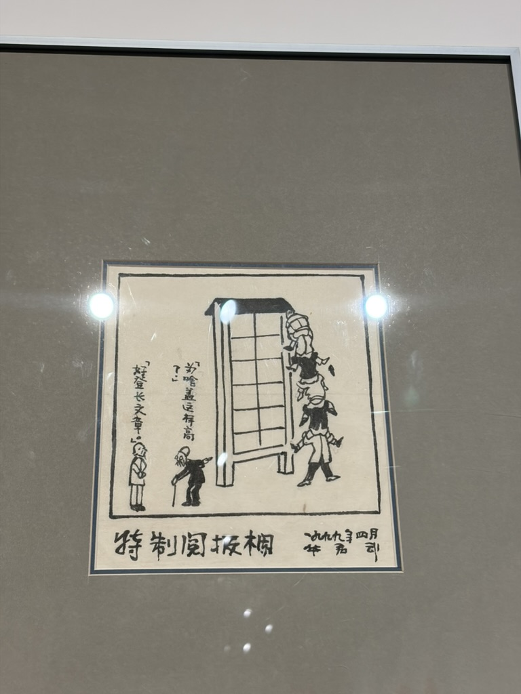
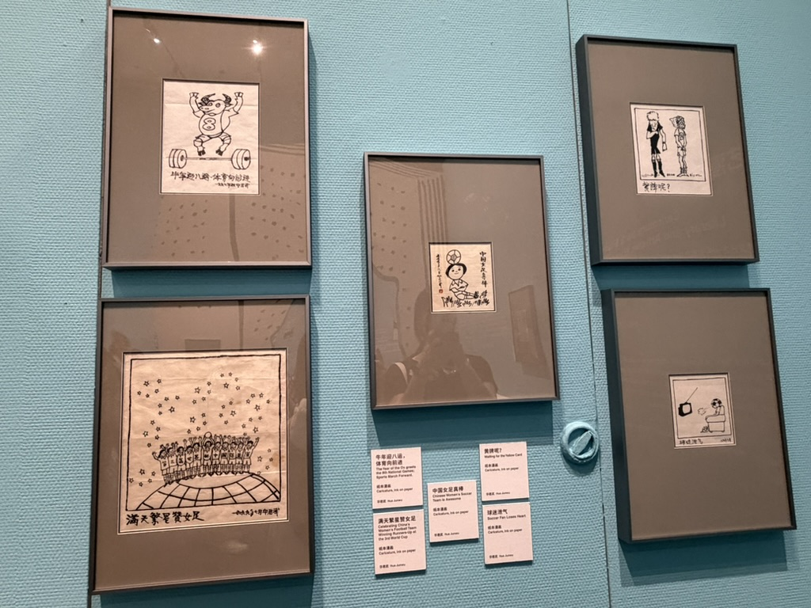
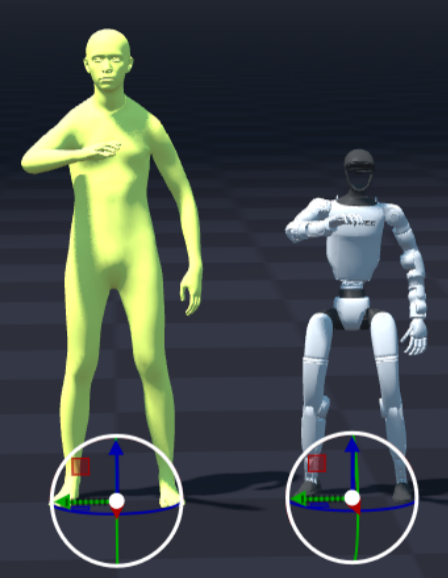
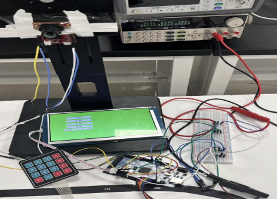
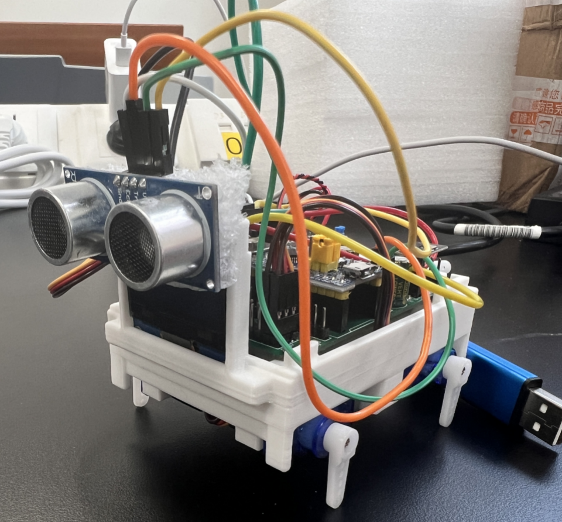
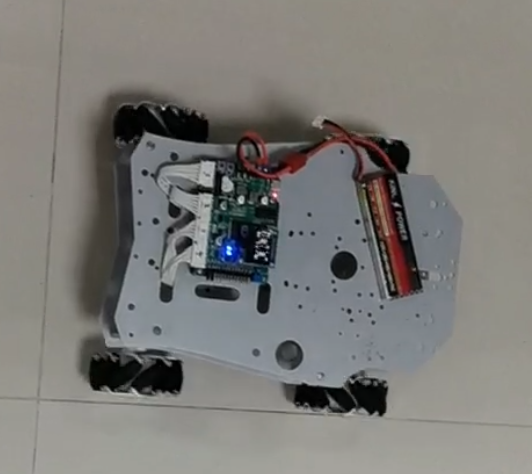

我是南方科技大学自动化专业本科生， 研究方向包括机器人、计算机视觉、 嵌入式系统以及具身智能（Embodied AI）。
在校期间参与机器人导航、视觉测量、 人体运动重定向、机械臂抓取等多个项目开发， 具备较强的软件开发、算法实现与系统集成能力。
自动化专业 本科
2023.09 - 2026.04
GPA：3.82 / 4.0
专业排名：6 / 35

构建从目标检测到机械臂执行的完整闭环系统， 完成YOLO检测、相机标定、 坐标转换及机械臂抓取控制。

基于树莓派搭建机器人控制平台， 构建IMU、RFID与MCL粒子滤波融合定位系统， 提高机器人定位稳定性。

基于GMR与SOMA-X完成人体动作数据统一， 实现视频动作到机器人关节轨迹的转换流程。

基于OpenMV与Arduino设计视觉测量系统， 实现目标识别、距离测量与尺寸计算， 获全国大学生电子设计竞赛广东省二等奖。

基于STM32开发语音交互、 超声波避障、OLED显示与电量检测功能， 完成USART、PWM、ADC驱动开发。

基于Arduino Mega实现巡线控制、 编码器测速与PI闭环调速， 完成超声波测距与OLED显示。
Python · C · C++
STM32 · MSPM0 · Arduino · Raspberry Pi
OpenCV · OpenMV · YOLO
ROS2 · SLAM · MCL · Motion Retargeting
VS Code · Cursor · Matlab · Multisim · RoboDK · ShapeLab · WPS · Excel
2025年 广东省二等奖
邮箱:12312254@mail.sustech.edu.cn
电话:15527301102
GitHub:https://github.com/caratzhao-droid